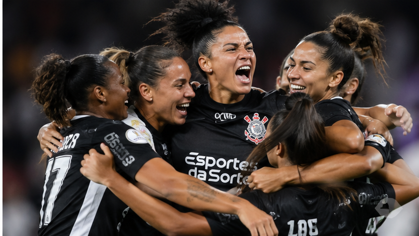

Corinthians x Cruzeiro: Brabas disputam a final da Libertadores Feminina
Corinthians busca o sétimo título continental diante do Cruzeiro na decisão de sábado (31), em Quito.

Uma final brasileira no Equador
Corinthians e Cruzeiro decidem a Libertadores Feminina neste sábado (31), no Estádio Rodrigo Paz Delgado, em Quito, no Equador. As duas equipes chegam à final com cinco vitórias em cinco partidas.
As Brabas em busca do hepta
Maior campeão da história da competição, o Corinthians tem seis títulos e busca o quarto consecutivo. A equipe avançou à final ao superar o Independiente Santa Fe por 2 a 1 na semifinal.
A campanha corinthiana soma 21 gols marcados e apenas dois sofridos em cinco jogos. Do outro lado, o Cruzeiro faz sua estreia na Libertadores e busca a primeira taça continental.
Torcida mobilizada
A decisão reúne duas equipes brasileiras e promete um confronto de alto nível. Qual é o seu palpite para a final? A Shop Fiel acompanha as Brabas com a mesma paixão da arquibancada.
Notícia publicada em 30/10/2026. Informações sujeitas a atualização.